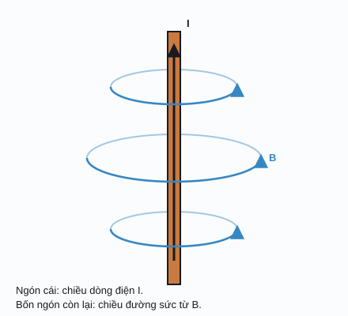
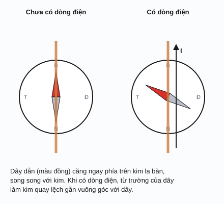

Sinh điện từ / Phần 2
Từ
Điện tích đứng yên tạo ra điện trường; điện tích chuyển động tạo thêm từ trường. Mô sống gần như "trong suốt" với từ trường, nên từ trường đi xuyên qua cơ thể gần như nguyên vẹn, và từ trường cực yếu của tim và não cũng đo được từ bên ngoài.
Từ trường của dòng điện
Năm 1820, Ørsted thấy kim la bàn bị lệch khi đặt gần một dây có dòng điện. Đó là bằng chứng đầu tiên cho thấy điện và từ liên quan với nhau: dòng điện tạo ra từ trường (magnetic field) \(\vec B\), đơn vị tesla (T).
Từ trường do một đoạn dây nhỏ mang dòng điện tạo ra được mô tả bởi định luật Biot–Savart (Biot–Savart law). Cộng (tích phân) đóng góp của mọi đoạn dây cho ta từ trường tổng.
I: dòng điện (A); dl: đoạn dây (m), hướng theo dòng điện; r: khoảng cách từ đoạn dây đến điểm xét (m); µ₀: hằng số từ (vacuum permeability).
Chiều của B theo quy tắc nắm tay phải (right-hand rule): ngón cái chỉ chiều dòng điện, bốn ngón còn lại cong theo chiều đường sức từ.
Dây dẫn và từ trường
Mặt cắt vuông góc với các dây. ⊙ dòng điện đi ra, ⊗ đi vàoĐường sức từ luôn là những đường khép kín: chúng không có điểm bắt đầu hay kết thúc như đường sức điện. Đó là vì không tồn tại "điện tích từ" đứng riêng lẻ (đơn cực từ, magnetic monopole). Ý này sẽ trở thành định luật Gauss cho từ trường ở phần Maxwell.
Trên demo, các đường sức được vẽ sao cho giữa hai đường liền kề luôn có cùng một lượng từ thông. Vì vậy chỗ đường sức dày là chỗ B mạnh: bên trong ống dây, các đường gần như song song và cách đều, tức là từ trường gần như đều.


Lực Lorentz
Từ trường không tác dụng lực lên điện tích đứng yên. Nó chỉ tác dụng lên điện tích đang chuyển động, và lực luôn vuông góc với cả vận tốc lẫn B. Tổng lực điện và lực từ lên một hạt mang điện gọi là lực Lorentz (Lorentz force):
v: vận tốc (m/s); r: bán kính quỹ đạo tròn, còn gọi là bán kính Larmor hay bán kính cyclotron (m); fc: tần số cyclotron (Hz), không phụ thuộc vận tốc. Vì lực từ luôn vuông góc với vận tốc nên nó không sinh công: hạt đổi hướng nhưng không đổi tốc độ.
Hạt mang điện trong từ trường đều
Chọn hạt, chỉnh vận tốc và từ trườngHình dạng từ trường
Nam châm vĩnh cửu có từ trường vì trong vật liệu có vô số "dòng điện nguyên tử" (chủ yếu từ spin của electron) cùng hướng với nhau. Đầu đường sức đi ra gọi là cực Bắc (N), đầu đường sức đi vào gọi là cực Nam (S). Bên trong nam châm, đường sức đi từ S sang N, nên chúng vẫn khép kín.
Kim la bàn là một nam châm nhỏ quay tự do: đầu N của kim luôn chỉ theo chiều của B tại chỗ nó đứng.
Nam châm, Trái Đất và la bàn
Kéo rê la bàn để dò theo đường sứcTừ trường Trái Đất
Gần đúng bậc nhất, Trái Đất giống một nam châm thẳng đặt lệch khoảng 10° so với trục quay. Từ trường này sinh ra bởi dòng chảy của sắt lỏng dẫn điện trong lõi ngoài (cơ chế dynamo địa từ, geodynamo).
- Cực từ nằm gần cực Bắc địa lý thực chất là cực S của "nam châm Trái Đất", vì nó hút đầu N của kim la bàn.
- Độ lớn ở mặt đất khoảng 25–65 µT: yếu nhất gần xích đạo (đặc biệt vùng dị thường Nam Đại Tây Dương), mạnh nhất gần hai cực. Ở Việt Nam và Nhật Bản cỡ 40–50 µT.
- Độ nghiêng từ (inclination, dip) là góc giữa B và mặt phẳng ngang: gần 0° ở xích đạo từ, gần 90° ở cực từ. Theo mô hình lưỡng cực: \(\tan I = 2\tan\lambda\), với λ là vĩ độ từ.
- Nhiều loài (chim di cư, rùa biển, cá hồi) và cả vi khuẩn hướng từ (magnetotactic bacteria) cảm nhận được từ trường này để định hướng (cảm thụ từ, magnetoreception).
Độ lớn & đơn vị
Có hai đại lượng hay bị nhầm. Mật độ từ thông (magnetic flux density) \(\vec B\), đơn vị tesla, là thứ tác dụng lực lên điện tích; trong đời thường và trong trang này, "từ trường" thường là nói B. Cường độ từ trường (magnetic field strength) \(\vec H\), đơn vị A/m, chỉ phụ thuộc dòng điện tự do, không tính phần do vật liệu bị từ hóa.
M: độ từ hóa (A/m); µr: độ từ thẩm tương đối. Mô sống chủ yếu là nước, có độ cảm từ (magnetic susceptibility) χ ≈ −9 × 10⁻⁶ (nghịch từ rất yếu), nên µr ≈ 1: từ trường đi qua cơ thể gần như không đổi. Đây là khác biệt lớn so với điện trường, vốn bị mô dẫn điện làm suy giảm mạnh.
| Nguồn | B (cỡ) | Thang log, từ 1 fT đến 10 T | Ghi chú |
|---|---|---|---|
| Não ngườiMEG, magnetoencephalography | 10 fT – 1 pT | Cần cảm biến SQUID hoặc OPM, phòng chắn từ. | |
| Tim ngườiMCG, magnetocardiography | 10 – 100 pT | Đỉnh phức bộ QRS cỡ 50 pT. | |
| Thiết bị điện gia dụng (cách 30 cm)ELF, 50/60 Hz | 0,01 – 1 µT | Giảm rất nhanh theo khoảng cách. | |
| Trái Đấtgeomagnetic field | 25 – 65 µT | Gần như tĩnh (DC). | |
| Nam châm dán tủ lạnh | ≈ 5 mT | Sát bề mặt. | |
| Nam châm neodymium nhỏ | 0,1 – 0,5 T | Sát bề mặt. | |
| Máy MRI lâm sàngmagnetic resonance imaging | 1,5 – 3 T | Máy nghiên cứu: 7 T trở lên. |
Con người đã phát hiện ra từ như thế nào
- ~1088
Kim chỉ nam ở Trung Hoa
Thẩm Quát (Shen Kuo) mô tả kim từ dùng để chỉ hướng và ghi nhận độ lệch giữa hướng kim chỉ và hướng Bắc thật (độ từ thiên, declination).
- 1269
Petrus Peregrinus
Trong Epistola de magnete, ông mô tả hai cực của nam châm, cách xác định cực, và việc bẻ đôi nam châm vẫn cho hai nam châm có đủ hai cực.
- 1600
William Gilbert: Trái Đất là một nam châm
Dùng một quả cầu nam châm nhỏ (terrella), Gilbert cho thấy kim la bàn chỉ hướng vì bản thân Trái Đất là một nam châm khổng lồ.
- 1820
Ørsted, Ampère, Biot và Savart
Tháng 4/1820, Hans Christian Ørsted thấy dòng điện làm lệch kim la bàn. Chỉ trong vài tháng, André-Marie Ampère đo lực giữa hai dây dẫn có dòng điện, còn Jean-Baptiste Biot và Félix Savart tìm ra quy luật B tỉ lệ nghịch với khoảng cách quanh dây thẳng.
- 1832
Carl Friedrich Gauss: đo từ trường Trái Đất
Gauss lần đầu đo được độ lớn tuyệt đối của từ trường Trái Đất, và cùng Wilhelm Weber lập mạng lưới trạm quan trắc địa từ. Đơn vị gauss (G) mang tên ông.
- 1895
Hendrik Lorentz
Lorentz viết biểu thức đầy đủ cho lực tác dụng lên một điện tích chuyển động trong điện trường và từ trường, ngày nay gọi là lực Lorentz.
- 1963
Baule và McFee: từ tâm đồ đầu tiên
Dùng hai triệu vòng dây quấn quanh lõi ferrite, Gerhard Baule và Richard McFee ghi được từ trường của tim người: magnetocardiogram (MCG) đầu tiên.
- 1968
David Cohen: từ não đồ
Cohen đo được từ trường của nhịp alpha của não (1968), rồi dùng cảm biến SQUID trong phòng chắn từ ở MIT để ghi MCG (1970) và MEG (1972) rõ nét hơn nhiều.
- 1975
Richard Blakemore: vi khuẩn hướng từ
Blakemore phát hiện các vi khuẩn bơi theo đường sức từ Trái Đất nhờ chuỗi tinh thể magnetite trong tế bào, bằng chứng rõ ràng về cảm thụ từ ở sinh vật.
Tài liệu tham khảo
- J. Malmivuo, R. Plonsey, Bioelectromagnetism, 1995, chương 1 (lịch sử) và chương 12, 20 (MEG, MCG). bem.fi/book.
- D. J. Griffiths, Introduction to Electrodynamics, chương 5 (tĩnh từ) và chương 6 (từ trường trong vật chất).
- NOAA, World Magnetic Model: mô hình từ trường Trái Đất chính thức.
- Magnetotactic bacteria và Magnetoencephalography trên Wikipedia.